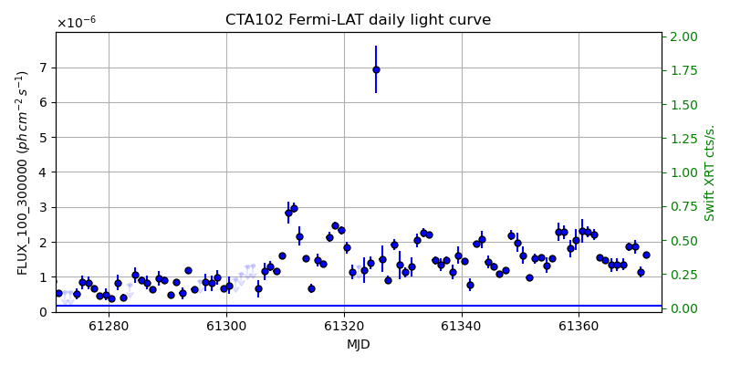
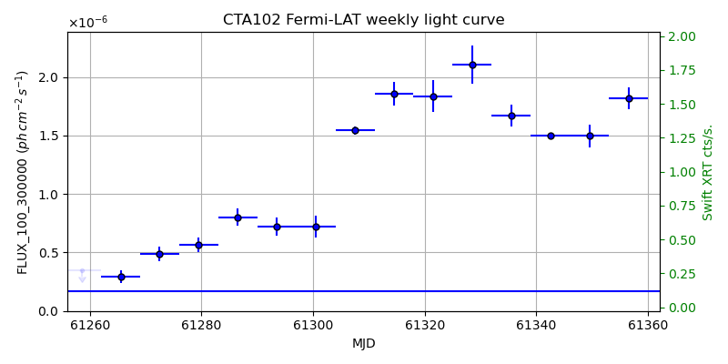
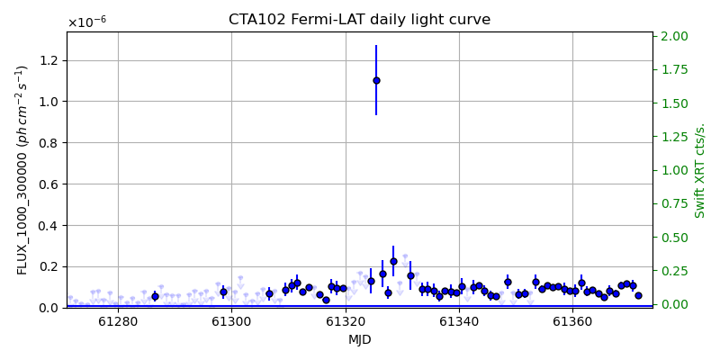

LAT Lightcurve site: https://fermi.gsfc.nasa.gov/ssc/data/access/lat/msl_lc/source/CTA_102
Swift site: https://www.swift.psu.edu/monitoring/source.php?source=CTA102
NED: Query
Time of last update of this page: UT: 2026-11-20 16:29 (MJD: 61364.687)
| Property | Value |
|---|---|
| R.A. | 22:32:36.48 |
| Dec. | 11:43:51.6 |
| z | 1.032 |
| 3FGL SpectrumType | LogParabola |
| 3FGL PL Index | |
| 3FGL Flux_100_300000 | 1.68e-07 1 / (s cm2) |
| 3FGL Flux_1000_300000 | 6.39e-09 1 / (s cm2) |
| 3FGL Flux >200 GeV | 3.94e-13 1 / (s cm2) |
| 3FGL Extrap. Crab >200 GeV | 0.00 |
| 3FGL Flux After EBL Absorption >200GeV | 7.20e-15 1 / (s cm2) |
| 3FGL EBL Crab Fraction >200GeV | 0.00 |

| MJD | dMJD | Flux | dFlux | Frac3FGL | FracCrab>200GeV | EBLFracCrab>200GeV |
|---|---|---|---|---|---|---|
| 61359.50 | 0.50 | 2.07e-06 | 2.98e-07 | 12.31 | 0.02 | 0.00 |
| 61360.50 | 0.50 | 2.31e-06 | 3.31e-07 | 13.79 | 0.02 | 0.00 |
| 61361.50 | 0.50 | 2.29e-06 | 1.49e-07 | 13.63 | 0.02 | 0.00 |
| 61362.50 | 0.50 | 2.21e-06 | 1.61e-07 | 13.18 | 0.02 | 0.00 |
| 61363.50 | 0.50 | 1.56e-06 | 7.29e-08 | 9.27 | 0.02 | 0.00 |

| MJD | dMJD | Flux | dFlux | Frac3FGL | FracCrab>200GeV | EBLFracCrab>200GeV |
|---|---|---|---|---|---|---|
| 61328.50 | 3.50 | 2.11e-06 | 1.62e-07 | 12.55 | 0.02 | 0.00 |
| 61335.50 | 3.50 | 1.67e-06 | 9.30e-08 | 9.94 | 0.02 | 0.00 |
| 61342.50 | 3.50 | 1.50e-06 | 1.01e-08 | 8.92 | 0.01 | 0.00 |
| 61349.50 | 3.50 | 1.50e-06 | 9.61e-08 | 8.90 | 0.01 | 0.00 |
| 61356.50 | 3.50 | 1.82e-06 | 9.43e-08 | 10.81 | 0.02 | 0.00 |

| MJD | dMJD | Flux | dFlux | Frac3FGL | FracCrab>200GeV | EBLFracCrab>200GeV |
|---|---|---|---|---|---|---|
| 61359.50 | 0.50 | 8.19e-08 | 1.20e-09 | 12.81 | 0.02 | 0.00 |
| 61360.50 | 0.50 | 8.10e-08 | 3.19e-08 | 12.67 | 0.02 | 0.00 |
| 61361.50 | 0.50 | 1.23e-07 | 3.90e-08 | 19.24 | 0.03 | 0.00 |
| 61362.50 | 0.50 | 7.88e-08 | 2.29e-08 | 12.33 | 0.02 | 0.00 |
| 61363.50 | 0.50 | 8.57e-08 | 1.18e-08 | 13.41 | 0.02 | 0.00 |
| MJD | dMJD | Flux | dFlux | Frac3FGL | FracCrab>200GeV | EBLFracCrab>200GeV |
|---|---|---|---|---|---|---|
| 61328.50 | 3.50 | 2.69e-07 | 5.13e-09 | 42.04 | 0.07 | 0.00 |
| 61335.50 | 3.50 | 7.87e-08 | 9.32e-09 | 12.32 | 0.02 | 0.00 |
| 61342.50 | 3.50 | 7.88e-08 | 5.67e-09 | 12.32 | 0.02 | 0.00 |
| 61349.50 | 3.50 | 6.05e-08 | 9.69e-09 | 9.46 | 0.02 | 0.00 |
| 61356.50 | 3.50 | 9.89e-08 | 1.16e-08 | 15.48 | 0.03 | 0.00 |
--------------------------------------------------------- Using user-supplied coords: 22:32:36.48 11:43:51.6 2000 --------------------------------------------------------- FLWO UT night of: 2026-11-21 Local Sid. @ Midnight: 03:37 Sunset (-15.0) (local, UT): 18:33 01:33 Sunrise (-15.0) (local, UT): 05:47 12:47 Moonrise (local, UT): Moonset (local, UT): 03:40 10:40 Moon phase: 0.85 --------------------------------------------------------- AzTime LSID UT Obj_el Obj_az Mn_el Mn_az Sep. --------------------------------------------------------- 18:33 22:09 01:33 69.4 162.5 47.9 117.4 30.6 19:03 22:39 02:03 70.2 183.8 53.3 125.0 30.7 19:33 23:09 02:33 68.6 204.3 58.2 134.7 30.9 20:03 23:39 03:03 65.1 220.9 62.3 146.9 31.0 20:33 00:09 03:33 60.4 233.3 65.1 162.1 31.1 21:03 00:39 04:03 55.0 242.6 66.3 179.7 31.3 21:33 01:09 04:33 49.1 249.9 65.4 197.5 31.4 22:03 01:39 05:03 43.0 255.8 62.9 213.2 31.5 22:33 02:09 05:33 36.8 260.9 59.0 225.9 31.6 23:03 02:39 06:03 30.4 265.3 54.2 235.9 31.8 23:33 03:09 06:33 24.0 269.4 48.9 243.9 31.9 00:03 03:39 07:03 17.6 273.3 43.2 250.4 32.1 00:33 04:10 07:33 11.3 277.1 37.3 255.9 32.3 01:03 04:40 08:03 5.1 280.9 31.2 260.7 32.4 01:33 05:10 08:33 -0.6 284.8 25.1 265.1 32.6 02:03 05:40 09:03 -7.4 288.9 19.0 269.2 32.8 02:33 06:10 09:33 -13.4 293.3 12.9 273.0 33.0 03:03 06:40 10:03 -19.2 298.1 6.8 276.9 33.3 03:33 07:10 10:33 -24.7 303.4 1.0 280.7 33.5 04:03 07:40 11:03 -29.9 309.3 -4.9 284.7 33.8 04:33 08:10 11:33 -34.6 315.9 -11.1 288.8 34.0 05:03 08:40 12:03 -38.7 323.5 -16.8 293.2 34.3 05:33 09:10 12:33 -42.1 332.1 -22.3 298.1 34.6 05:47 09:25 12:47 -43.4 336.5 -24.8 300.5 34.8 --------------------------------------------------------- Dark hours >55 deg.: 0.00